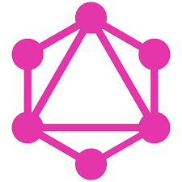

As APIs são um conjunto de padrões que fazem parte de uma interface. As APIs permitem a criação de plataformas de maneira mais simples e prática para desenvolvedores. A partir de APIs, é possível criar softwares, aplicativos, programas e plataformas diversas. Por exemplo, apps desenvolvidos para celulares Android e iPhone (iOS) são criados a partir de padrões definidos e disponibilizados pelas APIs de cada sistema operacional.
Em 2020, o Google a Apple anunciaram que trabalhariam juntos para desenvolver uma API que rastreasse o contágio da Covid-19 a partir dos celulares. Mas, afinal, o que é uma API? Confira, na lista abaixo, cinco perguntas e respostas sobre APIs e solucione dúvidas sobre a interface.
1. O que é API e como funciona?
A sigla API deriva da expressão inglesa Application Programming Interface que, traduzida para o português, pode ser compreendida como uma interface de programação de aplicação. Ou seja, API é um conjunto de normas que possibilita a comunicação entre plataformas por meio de uma série de padrões e protocolos.
Por meio de APIs, desenvolvedores podem criar novos softwares e aplicativos capazes de se comunicar com outras plataformas. Por exemplo: caso um desenvolvedor queira criar um aplicativo de fotos para Android, ele poderá ter acesso à câmera do celular através da API do sistema operacional, sem ter a necessidade de criar uma nova interface de câmera do zero.
O mesmo acontece com aplicativos que utilizam os serviços de mapas por meio da API do Google Maps ou, ainda, nas integrações entre apps, como o Spotify e o Instagram, que possibilita compartilhar faixas nos Stories.
2. Qual a função de uma API?
A função de uma API é, basicamente, facilitar e simplificar o trabalho de desenvolvedores, além de oferecer um padrão para a criação de novas plataformas. Com o uso das APIs, não é necessário criar códigos personalizados para cada função que um programa for executar, o que simplifica a criação de novos aplicativos, softwares e plataformas em geral.
Além disso, as APIs também possuem papel fundamental quando o assunto é segurança, já que também são capazes de bloquear acesso e permissões a dados de software e hardware que algumas aplicações não podem usar.
3. Exemplos de API
As APIs estão presentes na maioria dos aplicativos que utilizamos no nosso dia a dia. No WhatsApp, por exemplo, podemos perceber a integração da lista de contatos salva no dispositivo com os contatos do aplicativo. No Facebook, temos a integração com o Instagram, que permite que fotos postadas no aplicativo também sejam postadas automaticamente no Facebook.
Também podemos observar o uso das APIs quando realizamos compras online, já que a plataforma utilizada para pagamentos — em que colocamos as informações de cartões de crédito — deve ser integrada à operadora do cartão, que pode ou não autorizar a compra. Esses são alguns exemplos de APIs mais comuns, que podemos perceber no nosso cotidiano, e que facilitam a comunicação entre plataformas.
4. O que é API no mercado financeiro?
As APIs também podem ser utilizadas para a comunicação entre serviços e, no mercado financeiro, elas funcionam por meio do sistema de Open Banking. A solução de Open Banking é simples e promete mudar o sistema financeiro, já que as informações de consumidores estariam disponíveis em uma base de dados padronizada capaz de se comunicar com outras instituições, o que seria possível através de APIs. Com o Open Banking, seria mais fácil realizar a portabilidade de dados de um cliente que deseja migrar para outro banco, por exemplo.
5. Polêmicas da tecnologia
A criptografia é necessária para manter os dados das APIs seguros. Por este motivo, alguns certificados precisam ser validados corretamente, sem que haja margem para criação de possíveis brechas no sistema.
Quando estes certificados não são validados corretamente, essas vulnerabilidades no sistema podem ser exploradas, permitindo que hackers sejam capazes de interceptar dados de usuários, o que é potencialmente perigoso quando tratamos de informações financeiras, como o sistema de Open Banking e de dados médicos.
Tipos de APIs
As APIs podem ser divididas em cinco tipos principais: web, RESTful, SOAP, hardware e plataforma.
API Web
As APIs Web são aquelas que permitem a comunicação entre sistemas via internet, facilitando a integração de dados e utilização de suas diferentes funcionalidades. Um exemplo de API web bastante conhecida e utilizada é a API do Google Maps.
API RESTful
As APIs RESTful têm um estilo de construção que utiliza o protocolo HTTP. Por meio desse protocolo é que ocorre a comunicação. Isso faz com que essas APIs sejam mais leves e escaláveis. As APIs da Docusign são RESTful, por exemplo.
API SOAP
As APIs SOAP são baseadas no protocolo XML para troca de mensagens entre sistemas, sendo a opção perfeita para ambientes mais complexos, como o caso dos ambientes corporativos.
API Hardware
As APIs de hardware, como o próprio nome sugere, fornecem interfaces para interação com componentes físicos, como sensores e dispositivos embarcados.
API de plataforma
As APIs de plataforma são aquelas que possibilitam integrações e desenvolvimento de aplicativos em plataformas específicas, como Facebook ou Google. Nesse sentido, um exemplo conhecido é o API do Facebook Graph.
Quais as APIs segundo as políticas de uso?
Os tipos de APIs também podem ser classificados segundo as políticas de uso. Nesse contexto, elas se dividem em quatro tipos. Conheça!
APIs públicas
As APIs públicas são aquelas acessíveis a qualquer pessoa, geralmente, com documentação completa e exemplos de uso. Um exemplo de aplicação que se enquadra nessa categoria é a API do Google Translate.
APIs privadas
As APIs privadas são desenvolvidas para uso interno de uma empresa ou organização, com acesso totalmente restrito.
APIs de parceiros
As APIs de parceiros recebem esse nome, pois são compartilhadas com parceiros específicos para fins de integração e colaboração.
APIs compostas
Por fim, as APIs compostas são aquelas resultantes da combinação de APIs de diferentes fontes, criando novas funcionalidades e serviços.
Quais as APIs em relação ao uso?
Existem três categorias de APIs na classificação de uso: as de dados, de sistemas operacionais e remotas.
APIs de dados
Aquelas que fornecem acesso a bancos de dados e conjuntos de informações específicos, como o API do Instituto Brasileiro de Geografia e Estatística (IBGE).
APIs de sistemas operacionais
Tipos de APIs que permitem interação com funcionalidades do sistema operacional, como gerenciamento de arquivos e processos. O API do Windows se enquadra nessa classificação.
APIs remotas
Todas aquelas acessíveis via internet, permitindo interação com sistemas e dispositivos à distância. As APIs utilizadas por serviços de streaming, como a Netflix, Prime e Spotify são exemplos que enquadram nessa categoria.
Ferramentas Populares
O Postman é uma ferramenta popular para testar APIs e automatizar requisições.
O Swagger facilita a documentação e visualização de APIs RESTful.

O GraphQL é uma linguagem de consulta para APIs que permite obter dados de forma mais eficiente.
Conclusão
Diante do conceito de API e exemplos apresentados, podemos perceber o quão útil pode ser para nossas aplicações usar integrações APIs.
De forma geral, as APIs trazem uma abundância de recursos para enriquecer ainda mais os nossos aplicativos e permitem que sistemas conversem entre si, compartilhando serviços e informações, utilizando um padrão bem fácil de assimilar.
Agora que já sabe como funciona uma API, que tal começar a implementá-las na sua empresa?